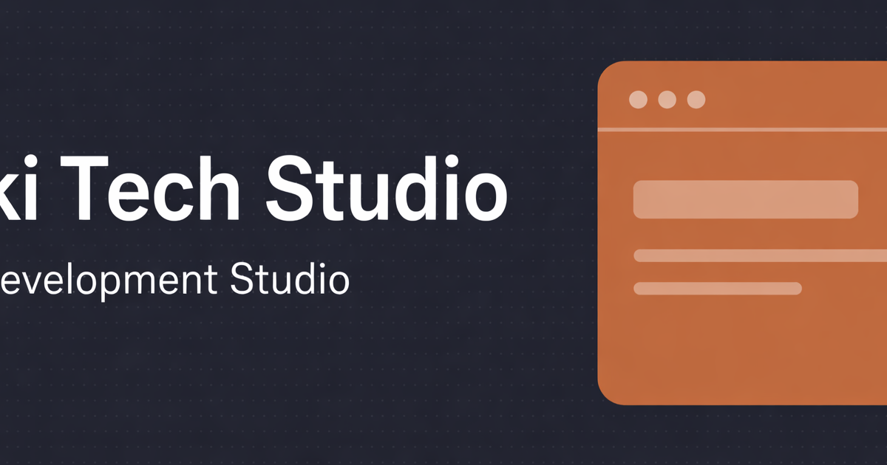

Proof
証明したい力
情報量の多いサービス領域を、相談しやすさを損なわず整理する力と、BtoB 向けの説明導線を設計する力です。
広い対応領域を、相談しやすい順序に組み替えるための掲載用デモ。
制作、アプリ開発、AI 連携のように守備範囲が広いサービスは、 情報を並べただけでは「結局どこから相談できるのか」が曖昧になりがちです。 この作品では、掲載用デモとして、幅広さを残しながら相談内容を想像しやすい順に情報を整理しました。

Note
実在クライアントのコーポレート実績ではなく、幅広い対応領域をどう整理して見せるかを扱う自主制作の詳細ページです。
Background
制作会社サイトは、できることが多いほど強く見える反面、初見の人には輪郭がぼやけやすい題材です。
この作品では、対応領域の広さを見せるだけでなく、 「Web 制作だけでも相談できるのか」「アプリや AI 連携まで含めて話せるのか」といった疑問に 順番に答える構成を目指しました。
この題材で見せたいこと
Purpose
Proof
情報量の多いサービス領域を、相談しやすさを損なわず整理する力と、BtoB 向けの説明導線を設計する力です。
Audience
何を頼めるかがまだ曖昧な企業担当者や、制作以外の開発支援まで含めて比較検討している人を想定しています。
Information Architecture
01
最初の段階で「どこまで話せるサイトなのか」が見えないと離脱しやすいため、守備範囲を早めに提示する前提で組み立てます。
02
制作、アプリ、AI 連携のような領域を長文で混ぜず、閲覧者が自分に近い話題だけ拾いやすい粒度に分けています。
03
相談前に起こりやすい疑問を FAQ で補い、実績詳細とあわせて問い合わせ前のイメージを作れる流れを意識しました。
04
最後まで読まないと連絡できない構造にせず、サービス理解の節目ごとに相談の入口が見える配置を想定しています。
Design Direction
Air
テック寄りのシャープさを持たせつつ、冷たく閉じた印象になりすぎないよう、相談の余地が残る温度に整えます。
Type
広い領域を説明するため、見出しで区切りを明確にしながら、本文は読み疲れしない密度に抑える方針です。
Space
サービス単位の理解が混ざらないよう、モジュールごとの余白で区切りを作り、情報の塊を分かりやすくします。
Contrast
守備範囲の説明、実績詳細、問い合わせ導線のような主要判断ポイントだけを強く見せ、説明過多を防ぎます。
Flow
できることを知る、近い事例を見る、疑問を解く、相談する、という順で納得が積み上がる流れを狙っています。
Implementation
Sectioning
長い一枚物にせず、サービス紹介、実績、FAQ、問い合わせを役割単位で切り分け、迷いにくい読み順を作っています。
UI
主張の強い CTA だけに頼らず、文脈の近い場所に相談リンクを置く前提で、押しつけすぎない導線を意識しました。
Motion
アニメーションは勢いを出すためではなく、セクションやカードのまとまりを把握しやすくする補助として扱います。
Vanilla JS
掲載用デモとして、HTML / CSS / JavaScript のまま構成し、問い合わせ導線や軽い UI 挙動を整理して見せる方針です。
Expected Effect
01
自分が何を頼みたいかを曖昧なままにせず、近いサービス領域から話を始めやすくする狙いがあります。
02
対応範囲を並べるだけのサイトよりも、守備範囲の整理と実績詳細が結びつきやすい構成を目指しました。
03
FAQ や実績詳細を近くに置くことで、連絡する前に解ける疑問を増やし、次の行動へ進みやすくする意図があります。
Tech Stack
技術スタック自体を増やすよりも、情報量の多い BtoB サイトをどう整理し、どの順で相談へつなぐかを主眼にした構成です。